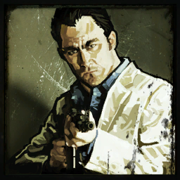
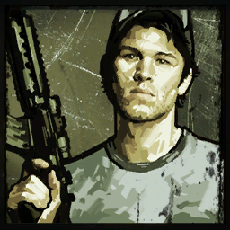
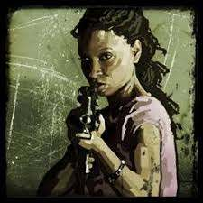

| Personajes |
Nombres |
Edad |
Historia |
 |
Coach |
44 Años |
Es un hombre de 44 años,de gran corazón y mayor apetito que solo es superado por su infinito gusto por el chocolate. Comenzó una carrera como defensa en su equipo de la universidad, pero una lesión en la rodilla le obligó a apartarse de ese futuro y acabó como profesor de educación física en una escuela secundaria en su ciudad natal. Tras ver como su querida ciudad ha sido devastada por la infección, no tiene más que usar sus conocimientos para guiar a los sobrevivientes por los enrevesados caminos hacia Nueva Orleans. Viste un polo de un equipo de fútbol americano, unos guantes negros y un pantalón beige con cinturón. |
|  |
Nick |
35 años |
Tiene 35 años,es un ludópata que estaba detenido, arrestado por fraude. Su vida le ha llevado a aprender una gran lección: no confiar en nadie, ya que gracias a esto lo atraparon. Llega a Savannah para su juicio, pero se encuentra con cadáveres amontonados y zombis, lo primero que se le ocurre es entrar a una tienda y robar el traje más caro que encontrase (de preferencia blanco), después de vestirse, se da cuenta de que no estaba solo, había otros 3 sobrevivientes , lo que le llevará a forjar una débil alianza con ellos que le hará aprender a confiar cada vez más en lo que queda de la humanidad. Viste un traje de color blanco y una camisa azul eléctrico; también lleva varios anillos en los dedos. |
|  |
Ellis |
23 Años |
Es un joven de 23 años es mecánico de Filadelfia. Ama la vida, se cree inmortal y puede tratar cualquier contratiempo como una diversión para impresionar a sus amigos. Divide su tiempo entre su trabajo de mecánico, salir con los amigos y estar los domingos en casa de su madre para comer. ¿Para qué vivir en otro sitio con lo perfecto que es éste? Y entonces llegaron los infectados para arruinar su perfecta vida. Así que ahora pasa el tiempo tratando de impresionar a sus nuevos amigos y divirtiéndose con las nuevas experiencias que aportan la situación en la que el mundo se encuentra ahora. Lleva puesto su mono de trabajo amarrado a la cintura, una playera color amarillo con un logotipo en negro y la gorra del taller en que trabajaba. Nota: el primer gran amor de Ellis fue Zoey, en la campaña "Defunción" la ve en el puente (en una de las varias escenas de esta campaña). |
|  |
Rochelle |
27 Años |
Tiene 27 años,es originaria de Cleveland, Ohio. Era una ayudante en una gran productora de televisión. Su trabajo consistía en cargar cables y preparar cafés hasta que le indicaron que tenía que ir hasta Savannah para rodar un pequeño reportaje sobre el centro de evacuación situado en dicha ciudad. Obviamente, la situación que halla es completamente distinta a la esperada. Cuando estaba preparando las cámaras, se ve inmersa en una gran batalla en la que lleva las de perder. La guerra no va a parar sus sueños y ahora la utiliza como una forma más de demostrar su ingenio. Usa unos pantalones vaqueros aparentemente nuevos y una camiseta rosa con el logo de la banda Depeche Mode. |